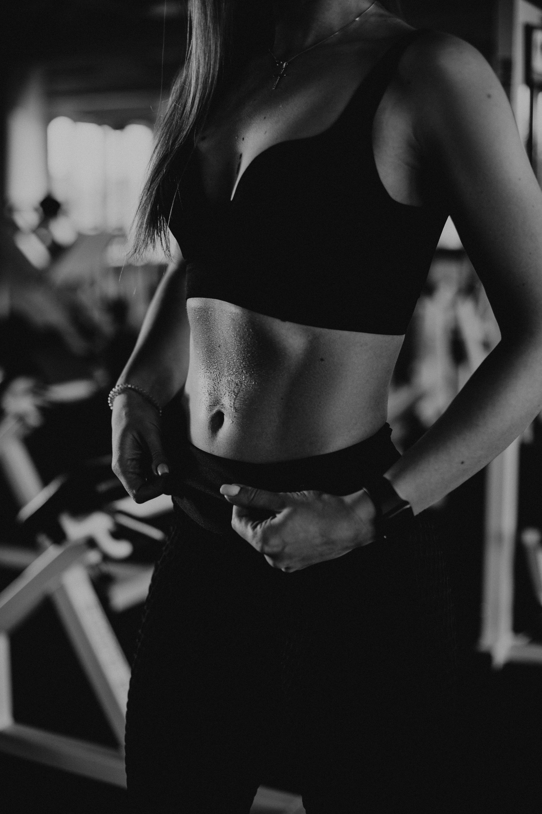

Quelle tenue pour s'entraîner à la maison ? Le vrai guide (2026)

Pas besoin d'un total look de salle de sport pour transpirer chez toi. Mais porter n'importe quoi (un vieux t-shirt en coton, un short trop large) peut vraiment gâcher une séance : inconfort, frottements, surchauffe. Voici ce qui compte réellement, sans tomber dans le piège des tenues "instagrammables" mais inutiles.
Et si tu n'as pas encore ton tapis de sport pour t'entraîner à la maison, c'est la première pièce à régler avant de penser à la tenue.
Pourquoi la tenue n'est pas un détail
À la différence d'une salle de sport où tu croises du monde, s'entraîner chez soi peut donner l'impression que la tenue n'a pas d'importance. Erreur : une mauvaise tenue peut directement nuire à ta séance.
- Un t-shirt en coton devient lourd et collant dès que tu transpires, ce qui gêne les mouvements
- Un legging ou short qui glisse en permanence te déconcentre à chaque répétition
- Une tenue trop ample peut se prendre dans un élastique ou gêner un mouvement de gainage
- Le manque de respirabilité fait monter la sensation de chaleur beaucoup plus vite, ce qui te pousse à écourter la séance
Une bonne tenue ne te fait pas gagner en force, mais elle retire des freins invisibles qui, cumulés, réduisent ta motivation à t'entraîner régulièrement.
Les matières qui comptent vraiment
1. Respirant avant tout
Privilégie les matières techniques (polyester technique, mélanges avec élasthanne) plutôt que le coton pur. Le coton absorbe la transpiration et reste humide contre la peau, alors que les matières techniques évacuent l'humidité vers l'extérieur du tissu.
2. L'élasticité
Pour du gainage, du HIIT, ou tout mouvement dynamique (fentes, squats sautés), une matière avec un minimum d'élasthanne (souvent autour de 5-10% dans la composition) évite toute sensation de tissu qui tire ou qui bride le mouvement.
3. La coupe, pas la marque
Une coupe ajustée (sans être compressive) limite les frottements et évite qu'un vêtement ample vienne perturber un mouvement. Ce n'est pas une question d'esthétique : un legging bien coupé ou un short mi-cuisse avec une bonne élasticité à la taille suffisent largement, peu importe la marque affichée dessus.
Ce qu'il te faut vraiment (et rien de plus)
Pour le haut
Un t-shirt technique respirant, ou un débardeur si tu préfères plus de liberté de mouvement aux épaules (utile pour les pompes, le développé, les mouvements de tirage).
Pour le bas
Un short ou un legging selon ta préférence — les deux fonctionnent tant que la matière est technique et la coupe ajustée. Le legging offre un peu plus de maintien pour les mouvements au sol (fentes, squats), le short est souvent plus frais en cas de forte chaleur.
Les chaussettes, souvent oubliées
Une paire de chaussettes de sport avec un minimum d'amorti et une matière respirante évite les ampoules pendant les exercices dynamiques (jumping jacks, mountain climbers). Ce détail change vraiment le confort sur une séance longue.
Notre sélection
Le combo polyvalent débutant
Un t-shirt technique respirant + un short ou legging avec élasthanne : la base qui couvre 90% des besoins pour du HIIT, du gainage, ou du renforcement musculaire léger.
T-shirt technique respirant, coupe ajustée sans être compressive, séchage rapide.
Voir le produit →Legging avec élasthanne, taille haute, maintien confortable pour les mouvements dynamiques.
Voir le produit →Le budget à prévoir
Pas besoin de viser des marques premium à 60-80€ la pièce. Des tenues techniques correctes se trouvent facilement entre 10 et 25€ par pièce. Le vrai critère n'est pas le prix, c'est la présence d'une matière technique respirante dans la composition — vérifie l'étiquette avant tout.
Les erreurs à éviter
- S'entraîner en coton — confortable au repos, mais devient vite lourd et humide à l'effort
- Choisir uniquement sur l'esthétique — une belle tenue qui gêne le mouvement reste une mauvaise tenue
- Négliger les chaussettes — un détail qui fait vraiment la différence sur le confort en séance longue
- Acheter en trop grand "pour être à l'aise" — le tissu ample gêne davantage qu'il ne libère, une coupe ajustée est presque toujours plus confortable à l'usage
En résumé
Une bonne tenue de sport maison, ce n'est pas une question de marque ou de style : c'est une matière technique respirante, une coupe ajustée, et une paire de chaussettes adaptée. Avec ça, plus aucun frein matériel entre toi et ta séance.
Dans le prochain article, on parlera des accessoires vraiment utiles pour muscler le haut du corps à la maison — sans finir avec une pièce pleine de matériel qui prend la poussière.
Cet article contient des liens affiliés Amazon. Si tu achètes via ces liens, je touche une petite commission, sans surcoût pour toi. Cela m'aide à continuer à créer du contenu gratuit.